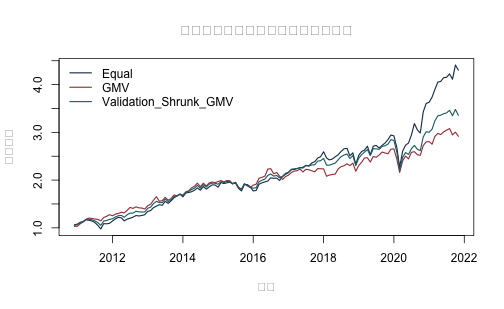
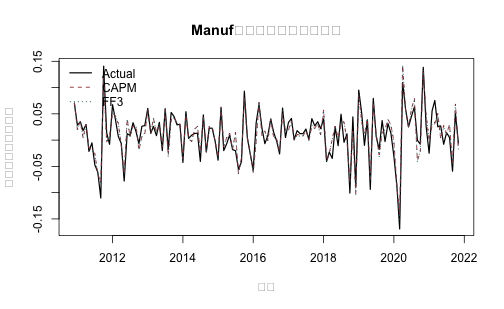

《財務時間序列分析》線上附錄
R09：投資組合、CAPM 與財務因子
本附錄對應第 13--14 章，改用真實的美國十產業月報酬與 Fama--French 因子，不再以模擬資產報酬作為主體。分析包含等權重、全域最小變異數（GMV）、驗證期選定的收縮 GMV，以及 CAPM／Fama--French 三因子在固定測試期的條件解釋表現。
樣本是作者工作用凍結快照：1967 年 1 月至 2021 年 11 月，共 659 個月、10 個產業。ret 是產業投資組合的月超額報酬，factor_ff_rf 是月無風險報酬，市場、SMB 與 HML 都是月因子報酬；本檔均以小數表示，例如 0.01 代表 1%。原課程程式透過 Kenneth French Data Library 取得 Fama--French 因子與十產業投資組合，再合併 Global-q 與 Welch--Goyal 總體變數。本附錄只使用十產業、無風險利率與 FF3 欄位。
公開版隨附作者已授權公開的 data/processed 凍結 CSV、程式與執行結果，因此可離線自含重跑。若讀者另從上游來源重建，仍須記錄資料庫版本、下載日、FIZ/CIZ 方法版本、百分比轉小數與產業報酬減去無風險利率的步驟；即時下載版本不保證與凍結快照相同。
knitr::opts_chunk$set(
echo = TRUE, message = FALSE, warning = FALSE,
fig.width = 7, fig.height = 4.3
)
stopifnot(getRversion() >= "4.3.0")
1. 讀取、來源與單位核對#
locate_project_file <- function(relative_path) {
candidates <- c(
relative_path,
file.path("..", relative_path),
file.path("../..", relative_path)
)
hit <- candidates[file.exists(candidates)]
if (length(hit) == 0L) stop("找不到專案檔案：", relative_path)
normalizePath(hit[1], mustWork = TRUE)
}
panel_file <- locate_project_file(
"data/processed/ff_qf_macro_industries_1967_2021.csv"
)
manifest_file <- locate_project_file("data/processed/manifest.csv")
d <- read.csv(panel_file, stringsAsFactors = FALSE, check.names = FALSE)
manifest <- read.csv(manifest_file, stringsAsFactors = FALSE)
d$month <- as.Date(d$month)
d <- d[order(d$month, d$industry), ]
manifest_key <- "data/processed/ff_qf_macro_industries_1967_2021.csv"
manifest_row <- manifest[manifest$file == manifest_key, , drop = FALSE]
actual_md5 <- unname(tools::md5sum(panel_file))
stopifnot(
nrow(manifest_row) == 1L,
nrow(d) == 6590L,
ncol(d) == 24L,
identical(actual_md5, manifest_row$md5),
!anyDuplicated(d[c("month", "industry")]),
length(unique(d$month)) == 659L,
length(unique(d$industry)) == 10L
)
data.frame(
first_month = min(d$month),
last_month = max(d$month),
months = length(unique(d$month)),
industries = length(unique(d$industry)),
return_unit = "decimal per month",
md5 = actual_md5
)
## first_month last_month months industries return_unit
## 1 1967-01-01 2021-11-01 659 10 decimal per month
## md5
## 1 69563611584d8a2dfd984ec6a53822a4
資料來源與解讀界線如下。
data.frame(
component = c("十產業與 FF3", "凍結合併面板", "本附錄輸出"),
source = c(
"Kenneth French Data Library；原課程以 frenchdata 下載",
"原課程 fffqmacro.R；另含 Global-q 與 Welch--Goyal 欄位",
"作者授權公開的 processed 凍結快照"
),
use_here = c(
"ret、RF、MKT-RF、SMB、HML",
"只讀取 FF3 相關欄位",
"方法教學，不作投資建議或因果解讀"
)
)
## component source
## 1 十產業與 FF3 Kenneth French Data Library；原課程以 frenchdata 下載
## 2 凍結合併面板 原課程 fffqmacro.R；另含 Global-q 與 Welch--Goyal 欄位
## 3 本附錄輸出 作者授權公開的 processed 凍結快照
## use_here
## 1 ret、RF、MKT-RF、SMB、HML
## 2 只讀取 FF3 相關欄位
## 3 方法教學，不作投資建議或因果解讀
2. 整理十產業矩陣並固定時間切分#
先確認同一月份的因子與無風險利率在十個產業列完全一致，再把長資料轉成「月份乘產業」矩陣。
common_names <- c(
"factor_ff_rf", "factor_ff_mkt_excess",
"factor_ff_smb", "factor_ff_hml"
)
common_check <- aggregate(
d[, common_names],
by = list(month = d$month),
FUN = function(x) max(x) - min(x)
)
stopifnot(max(as.matrix(common_check[, -1])) < 1e-12)
industries <- sort(unique(d$industry))
months <- sort(unique(d$month))
R_excess <- xtabs(ret ~ month + industry, data = d)
R_excess <- R_excess[, industries, drop = FALSE]
factor_by_month <- d[!duplicated(d$month), c("month", common_names)]
factor_by_month <- factor_by_month[match(months, factor_by_month$month), ]
rf <- factor_by_month$factor_ff_rf
R_total <- sweep(R_excess, 1, rf, "+")
stopifnot(
nrow(R_excess) == 659L,
ncol(R_excess) == 10L,
!anyNA(R_excess),
all(is.finite(R_excess)),
max(abs(rowMeans(R_total - R_excess) - rf)) < 1e-12
)
固定前 60% 為訓練期、接續 20% 為驗證期、最後 20% 為測試期。驗證期只選共變異數收縮強度；測試期不參與任何權重或模型選擇。
n_month <- length(months)
train_end <- floor(0.60 * n_month)
validation_end <- floor(0.80 * n_month)
train_id <- seq_len(train_end)
validation_id <- (train_end + 1L):validation_end
test_id <- (validation_end + 1L):n_month
stopifnot(max(train_id) < min(validation_id), max(validation_id) < min(test_id))
data.frame(
sample = c("訓練", "驗證", "測試"),
first_month = months[c(min(train_id), min(validation_id), min(test_id))],
last_month = months[c(max(train_id), max(validation_id), max(test_id))],
observations = c(length(train_id), length(validation_id), length(test_id))
)
## sample first_month last_month observations
## 1 訓練 1967-01-01 1999-11-01 395
## 2 驗證 1999-12-01 2010-11-01 132
## 3 測試 2010-12-01 2021-11-01 132
3. 等權重、GMV 與驗證期收縮 GMV#
GMV 權重為
\[ \widehat w_{GMV}= \frac{\widehat\Sigma^{-1}\mathbf 1} {\mathbf 1^\top\widehat\Sigma^{-1}\mathbf 1}. \]
為降低小特徵值造成的不穩定，候選共變異數為
\[ \widehat\Sigma_\lambda=(1-\lambda)\widehat\Sigma+ \lambda\operatorname{diag}(\widehat\Sigma), \]
且只用驗證期實現波動選擇 \(\lambda\)。
gmv_weights <- function(Sigma, lambda = 0) {
stopifnot(lambda >= 0, lambda <= 1)
Sigma_use <- (1 - lambda) * Sigma + lambda * diag(diag(Sigma))
one <- rep(1, nrow(Sigma_use))
raw <- solve(Sigma_use, one)
drop(raw / sum(raw))
}
Sigma_train <- cov(R_total[train_id, , drop = FALSE])
lambda_grid <- c(0, 0.10, 0.25, 0.50, 0.75, 1)
validation_sd <- vapply(lambda_grid, function(lambda) {
w <- gmv_weights(Sigma_train, lambda)
sd(drop(R_total[validation_id, , drop = FALSE] %*% w))
}, numeric(1))
shrinkage_table <- data.frame(
lambda = lambda_grid,
validation_monthly_sd = validation_sd
)
selected_lambda <- lambda_grid[which.min(validation_sd)]
shrinkage_table
## lambda validation_monthly_sd
## 1 0.00 0.04387532
## 2 0.10 0.04185025
## 3 0.25 0.04111311
## 4 0.50 0.04110520
## 5 0.75 0.04189224
## 6 1.00 0.04337890
selected_lambda
## [1] 0.5
鎖定 \(\lambda\) 後，合併訓練與驗證期重新估計一次；測試期仍未參與。
development_id <- c(train_id, validation_id)
Sigma_development <- cov(R_total[development_id, , drop = FALSE])
n_asset <- ncol(R_total)
weights <- rbind(
Equal = rep(1 / n_asset, n_asset),
GMV = gmv_weights(Sigma_development, 0),
Validation_Shrunk_GMV = gmv_weights(Sigma_development, selected_lambda)
)
colnames(weights) <- industries
stopifnot(max(abs(rowSums(weights) - 1)) < 1e-10)
round(weights, 3)
## Durbl Enrgy HiTec Hlth Manuf NoDur Other Shops Telcm
## Equal 0.100 0.100 0.100 0.100 0.100 0.100 0.100 0.100 0.100
## GMV 0.019 0.128 0.000 0.165 0.084 0.276 -0.465 0.077 0.268
## Validation_Shrunk_GMV 0.013 0.115 0.016 0.126 0.056 0.157 -0.002 0.051 0.169
## Utils
## Equal 0.100
## GMV 0.447
## Validation_Shrunk_GMV 0.300
max_drawdown <- function(r) {
wealth <- c(1, cumprod(1 + r))
min(wealth / cummax(wealth) - 1)
}
test_performance <- t(vapply(seq_len(nrow(weights)), function(j) {
total <- drop(R_total[test_id, , drop = FALSE] %*% weights[j, ])
excess <- total - rf[test_id]
c(
annualized_mean_total = 12 * mean(total),
annualized_sd = sqrt(12) * sd(total),
annualized_sharpe = sqrt(12) * mean(excess) / sd(excess),
maximum_drawdown = max_drawdown(total)
)
}, numeric(4)))
rownames(test_performance) <- rownames(weights)
round(test_performance, 4)
## annualized_mean_total annualized_sd annualized_sharpe
## Equal 0.1433 0.1412 0.9768
## GMV 0.1045 0.1166 0.8512
## Validation_Shrunk_GMV 0.1178 0.1198 0.9389
## maximum_drawdown
## Equal -0.2291
## GMV -0.1861
## Validation_Shrunk_GMV -0.2224
wealth <- sapply(seq_len(nrow(weights)), function(j) {
cumprod(1 + drop(R_total[test_id, , drop = FALSE] %*% weights[j, ]))
})
matplot(
months[test_id], wealth, type = "l", lty = 1, lwd = 1.5,
col = c("#173B57", "#A34045", "#1D6D73"),
xlab = "月份", ylab = "累積財富",
main = "真實十產業：固定權重的測試期表現"
)
legend(
"topleft", rownames(weights),
col = c("#173B57", "#A34045", "#1D6D73"),
lty = 1, lwd = 1.5, bty = "n"
)

這是歷史保留期比較，不是可交易績效宣告：未納入交易成本、估計誤差、多重嘗試或產業投資組合實際取得方式。
4. 真實產業報酬的 CAPM 與 FF3#
以下以製造業（Manuf）為焦點，係數只用訓練期估計。因子是當月已實現報酬，所以測試期結果是同期條件重建，不是月初可交易的事前預測。
focus_industry <- "Manuf"
reg_data <- data.frame(
month = months,
y = as.numeric(R_excess[, focus_industry]),
MKT = factor_by_month$factor_ff_mkt_excess,
SMB = factor_by_month$factor_ff_smb,
HML = factor_by_month$factor_ff_hml
)
fit_capm <- lm(y ~ MKT, data = reg_data, subset = train_id)
fit_ff3 <- lm(y ~ MKT + SMB + HML, data = reg_data, subset = train_id)
newey_west_vcov <- function(model, lag = 6L) {
X <- model.matrix(model)
e <- residuals(model)
n <- nrow(X)
Xe <- X * as.numeric(e)
meat <- crossprod(Xe)
if (lag > 0L) {
for (ell in seq_len(lag)) {
weight <- 1 - ell / (lag + 1)
Gamma <- crossprod(
Xe[(ell + 1L):n, , drop = FALSE],
Xe[seq_len(n - ell), , drop = FALSE]
)
meat <- meat + weight * (Gamma + t(Gamma))
}
}
bread <- solve(crossprod(X))
bread %*% meat %*% bread
}
V_ff3 <- newey_west_vcov(fit_ff3, lag = 6L)
data.frame(
term = names(coef(fit_ff3)),
estimate = unname(coef(fit_ff3)),
HAC_se_L6 = sqrt(diag(V_ff3)),
row.names = NULL
)
## term estimate HAC_se_L6
## 1 (Intercept) -0.001245651 0.0008102358
## 2 MKT 1.055043308 0.0188703733
## 3 SMB 0.031724972 0.0251161499
## 4 HML 0.049466265 0.0430464166
score_reconstruction <- function(model, rows) {
prediction <- predict(model, newdata = reg_data[rows, ])
actual <- reg_data$y[rows]
c(
RMSE = sqrt(mean((actual - prediction)^2)),
MAE = mean(abs(actual - prediction)),
conditional_R2 = 1 - sum((actual - prediction)^2) /
sum((actual - mean(reg_data$y[train_id]))^2)
)
}
conditional_test <- rbind(
CAPM = score_reconstruction(fit_capm, test_id),
FF3 = score_reconstruction(fit_ff3, test_id)
)
round(conditional_test, 4)
## RMSE MAE conditional_R2
## CAPM 0.0157 0.0120 0.8826
## FF3 0.0152 0.0117 0.8905
all_industry_rmse <- do.call(rbind, lapply(industries, function(industry) {
one <- transform(reg_data, y = as.numeric(R_excess[, industry]))
capm <- lm(y ~ MKT, data = one, subset = train_id)
ff3 <- lm(y ~ MKT + SMB + HML, data = one, subset = train_id)
data.frame(
industry = industry,
CAPM_test_RMSE = sqrt(mean((one$y[test_id] - predict(capm, one[test_id, ]))^2)),
FF3_test_RMSE = sqrt(mean((one$y[test_id] - predict(ff3, one[test_id, ]))^2))
)
}))
all_industry_rmse$FF3_minus_CAPM <-
all_industry_rmse$FF3_test_RMSE - all_industry_rmse$CAPM_test_RMSE
all_industry_rmse
## industry CAPM_test_RMSE FF3_test_RMSE FF3_minus_CAPM
## 1 Durbl 0.05813085 0.05715474 -0.0009761165
## 2 Enrgy 0.05894024 0.05692949 -0.0020107531
## 3 HiTec 0.01990691 0.01798862 -0.0019182973
## 4 Hlth 0.02467100 0.02520409 0.0005330911
## 5 Manuf 0.01574446 0.01519984 -0.0005446143
## 6 NoDur 0.02414882 0.02488379 0.0007349714
## 7 Other 0.01724476 0.01375786 -0.0034869024
## 8 Shops 0.02093788 0.02194264 0.0010047576
## 9 Telcm 0.02558006 0.02507557 -0.0005044857
## 10 Utils 0.03220611 0.03544833 0.0032422134
capm_test <- predict(fit_capm, newdata = reg_data[test_id, ])
ff3_test <- predict(fit_ff3, newdata = reg_data[test_id, ])
matplot(
months[test_id],
cbind(reg_data$y[test_id], capm_test, ff3_test),
type = "l", lty = c(1, 2, 3), lwd = c(1.6, 1.2, 1.2),
col = c("black", "#A34045", "#1D6D73"),
xlab = "月份", ylab = "月超額報酬（小數）",
main = "Manuf：測試期同期條件重建"
)
legend(
"topleft", c("Actual", "CAPM", "FF3"),
col = c("black", "#A34045", "#1D6D73"),
lty = c(1, 2, 3), lwd = c(1.6, 1.2, 1.2), bty = "n"
)

FF3 測試誤差若低於 CAPM，只能說在這個固定切分下，加入同期 SMB 與 HML 改善條件解釋；不能直接推成未來報酬可預測、因子具有因果效果或策略可獲利。
5. 可重現結論#
- 十產業、RF 與 FF3 都來自真實的固定月資料，不再用合成資產作主結果。
- 所有資料均明示為月小數報酬；產業
ret已扣除 RF。 - 收縮強度只用驗證期選定，最後測試期完全保留。
- CAPM／FF3 使用測試期同期因子時，只稱條件重建。
- 公開 repo 隨附作者授權的 processed CSV，可直接重跑；若另由上游重建，仍須保存來源、版本與轉換紀錄。
sessionInfo()
## R version 4.5.2 (2025-10-31)
## Platform: aarch64-apple-darwin20
## Running under: macOS Tahoe 26.5.1
##
## Matrix products: default
## BLAS: /System/Library/Frameworks/Accelerate.framework/Versions/A/Frameworks/vecLib.framework/Versions/A/libBLAS.dylib
## LAPACK: /Library/Frameworks/R.framework/Versions/4.5-arm64/Resources/lib/libRlapack.dylib; LAPACK version 3.12.1
##
## locale:
## [1] C.UTF-8/C.UTF-8/C.UTF-8/C/C.UTF-8/C.UTF-8
##
## time zone: Asia/Tokyo
## tzcode source: internal
##
## attached base packages:
## [1] stats graphics grDevices utils datasets methods base
##
## other attached packages:
## [1] tibble_3.3.0 dplyr_1.2.1
##
## loaded via a namespace (and not attached):
## [1] utf8_1.2.6 R6_2.6.1 tidyselect_1.2.1 xfun_0.57
## [5] magrittr_2.0.4 glue_1.8.0 knitr_1.51 pkgconfig_2.0.3
## [9] generics_0.1.4 lifecycle_1.0.5 cli_3.6.5 vctrs_0.7.2
## [13] textshaping_1.0.5 systemfonts_1.3.2 compiler_4.5.2 tools_4.5.2
## [17] ragg_1.5.2 evaluate_1.0.5 pillar_1.11.1 otel_0.2.0
## [21] rlang_1.1.7